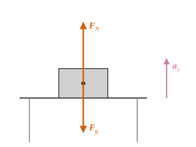

← 목차
수직항력 (normal force)
물체가 면을 누르면 면은 물체를 면에 수직으로 밀어낸다. 이 힘이
수직항력 (normal force)
이다.
(5.2.6)
는 탁자와 블록이 함께 갖는 위 방향 가속도다.
가속하지 않으면
이다 (5.2.7).
엘리베이터 안 저울은 수직항력을 잰다. 가속하는 기준틀에서 잰 눈금은
겉보기 무게 (apparent weight)
다.

다음 → 수직항력 시뮬레이션